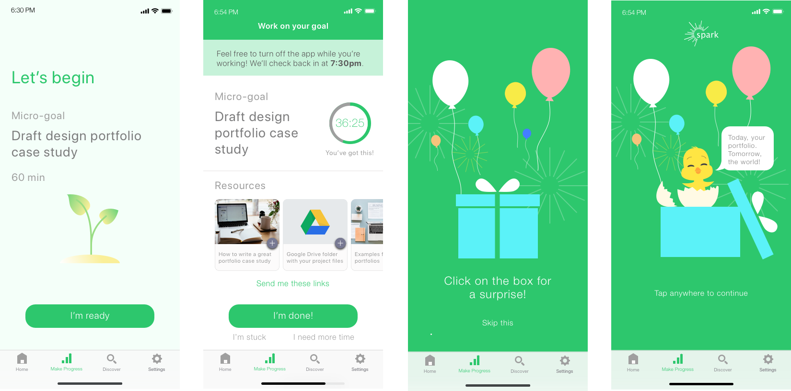

Spark
Designing an app to help people make progress on goals that matter • 2018

We all have goals we want to achieve, but life can get in the way - or we can get discouraged. Spark is an app concept that I developed with two classmates for a UX Design course at UC Berkeley Extension. Through empathy, ideation, and several rounds of user testing, we designed an experience to help people stay motivated with their goals through emphasizing 'micro-progress' and small wins.
Role
UI design
Interaction design
Prototyping
Usability testing
Team
3 UX design students
The Challenge
The inspiration from Spark came from a problem we'd all faced - having goals that were important to us but had fallen by the wayside. We knew we weren't alone; we learned that 92% of people abandon their New Year's resolutions. Reasons included competing priorities taking over, feeling discouraged by the complexity of the task ahead, or simply losing motivation.
With Spark, we wanted to design a solution that solved for these obstacles - and felt enjoyable to use. Within the team, my role focused on defining our context scenario, as well as the UI and flow/interactions.
Approach
Understanding our target users
Before beginning ideation, we wanted to really understand our target users - what they are trying to accomplish in their lives, and the types of experiences they would find rewarding.
Our persona, Jacob, became the focal point for our discussions around what we wanted to build. Jacob is a 35-year-old digital native who works full-time at a bank. He wants to transition into UX design (keeping with the topic of the class), but his day job and other responsibilities keep him busy.
Combined with our project objectives, creating this persona helped us formulate a set of design principles for Spark (the app that 'ignites' your goals):
- Focus on 'micro-progress' - From our conversations and review of the latest research, we knew that consistently setting and achieving small goals increased motivation - which could then propel larger progress. Micro-goals also fit well with our target users' busy routines - life may get in the way, but aside from the craziest days, we can usually find 5 minutes to do *something*.
- Provide just-in-time nudges - We envisioned our app as a gentle 'tap on your shoulder' that would re-surface your long-term goals during opportune moments - so that people would have a chance to 'look up' from the grind of their day-to-day.
- Automate as much as possible - We heard that goal tracking apps too often felt like 'overhead,' and that this tedium led to abandonment. And so we wanted Spark to feel more like an 'intelligent assistant' who made it easier to work on your goals.
Jacob also became the protagonist of a context scenario I developed, which illustrated how Spark could fit into our target users' daily lives.
Final design
A key experience within Spark is working on a 'micro-goal' - a task that supports your larger goal, but is small enough so that you can squeeze it into your day - whether you have an hour to spare or just five minutes. Through consistently tackling these micro-goals, people can feel more accomplished, more easily stay on track, and end up well on their way towards achieving their goals.
More details on process to come on the insights and iterations that led us to this solution - but for now please check out the below flow for a preview of how Spark works!
